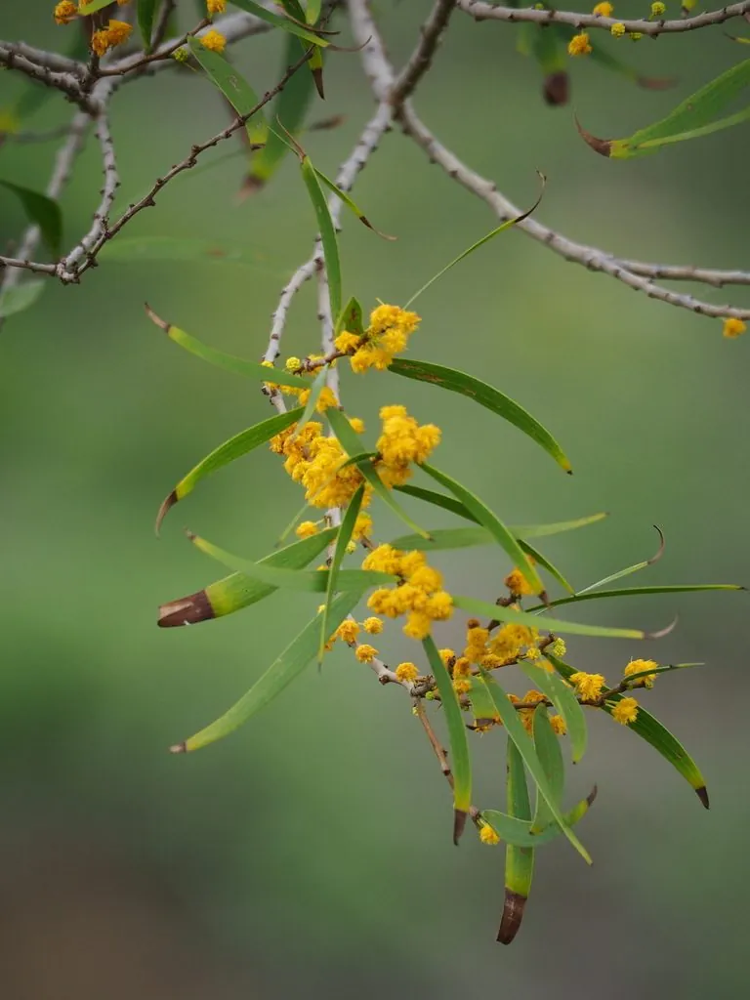

乔木 · 植物界
相思树 Acacia confusa

中国华南与台湾常见的常绿乔木，叶片退化成叶状柄，春季开黄色小花，是台湾著名的乡土树种。
- 分类
- 门被子植物门纲木兰纲目豆目科豆科属金合欢属
- 栖息环境
- 海拔 800 米以下的丘陵、山坡与滨海地区，喜光耐旱耐瘠薄
- 地理分布
- 中国台湾、福建、广东、广西、海南等地，东南亚也有分布
- 保护级别
- 暂无评估；中国未列入国家重点保护野生植物名录
物种志
相思树为常绿乔木，高可达 15 m，树皮灰褐色；叶片退化，叶柄膨大成披针形的叶状柄，长 5–10 cm，形似叶片，是长期适应干旱环境的结果。花期 4–6 月，头状花序腋生，花小、黄色，由多数小花聚成小球；荚果扁平、线形，成熟时褐色，内含多数种子。
相思树分布于中国台湾、福建、广东、广西、海南等地及东南亚，喜光、耐旱、耐瘠薄，适应性强，是南方丘陵与滨海地区的常见树种。木材坚硬，可供家具与薪炭用；树皮可提取栲胶；根系发达、能固氮，是荒山绿化与水土保持的优良树种。相思树在台湾被称为“相思仔”，是台湾最具代表性的乡土树种之一，因木材可制“相思木炭”而闻名。
形态与习性
- 株高可达 15 m，树皮灰褐色
- 花期4–6 月，花黄色
- 果期8–10 月，荚果扁平
- 光照喜光，不耐长期荫蔽
- 水分耐旱，怕积水
- 主要用途家具与薪炭用材、栲胶、荒山绿化
趣味知识
- 相思树的叶片退化成披针形的叶状柄，看起来像叶子，其实是叶柄。
- 相思树在台湾被称为“相思仔”，木材可烧制著名的“相思木炭”。
- 相思树耐旱耐瘠薄、根系能固氮，是荒山绿化的优良树种。
生态关系
- 共生 ← 黄猄蚁 蚂蚁保护植物、植物提供食物与住所